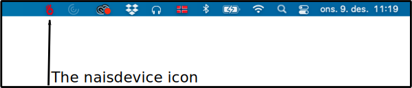
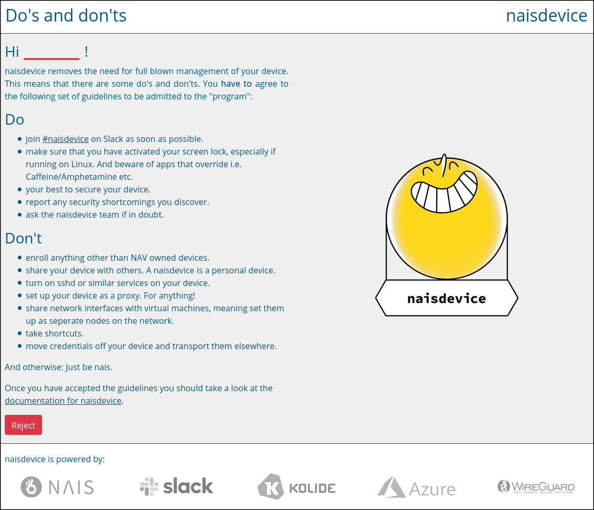

Installation§
OS-specific installation steps§
macOS Installation§
- Install the Kolide agent.
- Install Homebrew unless you already have it.
- Add the nais tap
brew tap nais/tap - Install the naisdevice cask:
(you will be prompted for your laptop-account's password to unlock
brew install naisdevicesudo). - Turn on your freshly installed
naisdeviceapp.- Use <Command> + <Space> to find your
naisdevice.appand press <Enter>. - Follow the instructions to connect your nais device.
- Use <Command> + <Space> to find your
- Remember to update your kubeconfig if you need to connect to anything running in a K8s cluster.
Windows Installation§
- install Kolide agent
- install WireGuard (Note: Ignore error message regarding UI only being accessible by the Builtin Administrators group)
- install naisdevice (naisdevice.msi)
- Remember to update your kubeconfig
- Start naisdevice from the Start menu
Ubuntu Installation§
Warn
Using Gnome DE on latest Ubuntu LTS - only supported variant atm
- Install Kolide agent.
- Add the nais PPA repo:
NAIS_GPG_KEY="/usr/local/share/keyrings/nav_nais.gpg" sudo mkdir -p "$(dirname "$NAIS_GPG_KEY")" curl -sfSL "https://ppa.nais.io/KEY.gpg" | gpg --dearmor | sudo dd of="$NAIS_GPG_KEY" echo "deb [signed-by=$NAIS_GPG_KEY] https://ppa.nais.io/ ./" | sudo tee /etc/apt/sources.list.d/nav_nais.list sudo apt update # Now you can apt install naisdevice - Intall the naisdevice package:
sudo apt install naisdevice - Turn on your freshly installed
naisdeviceapplication.- Find
naisdevicein your application menu, or use thenaisdevicecommand in a terminal to start the application. - Follow the instructions to connect your nais device.
- Find
- Remember to update your kubeconfig.
OS-agnostic install steps§
Install Kolide agent§
- Send a message to the Kolide app on Slack, either by:
- Pasting the following command (in any message input field) in Slack:
/msg @Kolide installersor by, - finding the "Kolide" app and directly messaging it the word
installers(case independent).
- Pasting the following command (in any message input field) in Slack:
-
Follow Kolide's walk-through:
- Select
Enroll a Device - Select
Enroll your device - Select platform and wait for Kolide to create your installer.
- Select
-
Install the package created by Kolide in your chat with the app (named
xkxp-*-kolide-launcher.{pkg,msi,deb}). There are is no success feedback given by Kolide in Slack. No error message means that the installation was successful. - Allow a couple of minutes to let Kolide initialize device state, but if you're stuck at "Waiting for your device to connect" just go to the next step.
- Check your devices status:
/msg @Kolide statuson Slack and fix errors if there are any. - Unless Kolide reports your device as "Ok"/"Healthy", follow the instructions on how to remediate the issues.
Go back to macOS, Windows or Ubuntu installations to continue.
Warning
The issues reported by Kolide must be addressed - these remediations have been vetted by the NAIS team and should be followed.
Depending on the issue, you might lose naisdevice connectivity if an issue is left unresolved for a sufficient length of time.
If a remediation required by Kolide makes you feel unsafe - feel free to ask in #naisdevice Slack channel.
Connect naisdevice through task/sys -tray icon§

In your Systray (where all your small program icons are located - see above picture for how it looks on Mac):
- Find your
naisdeviceicon (pictured above - though it should not be red at first attempted connection). - Left-click it and select
Connect. - Read and accept the End-User terms and agreement (The
Do's and Don'tsofnaisdevice). See the picture below. - Left-click the
naisdeviceicon again and clickConnect. You might need to allow ~20 seconds to pass before clickingConnectturns yournaisdeviceicon green. - If
naisdevicegives a pop-up notification about your device being unhealthy - double check that Kolide still reports your device as healthy. (Thenaisdevicesystray-icon should have turned into a yellow color).- If not your device is not healthy - remediate the issues.
Tip
If Kolide reports your device to be healthy, but still naisdevice won't let you connect, try to disconnect and re-connect naisdevice.
If naisdevice still won't let you connect, be aware that it may take up to 5 minutes for the naisdevice server to register that Kolide now thinks your device is okay.
How to accept the "Do's and don'ts" of naisdevice§
Info
You should be automatically sent here when connecting to naisdevice if not you've not yet accepted.
Can manually be found at the following URL: https://naisdevice-approval.nais.io/.

- Read through the list of "Do's and don'ts".
- If you've got any questions, you may join the #naisdevice Slack channel. Which happens to be one of the required "Do's" anyways ;).
- If you accept the terms (they are non-negotiable); click the green "Accept" button at the botttom of the page! The button should turn into a red "Reject" button once your acceptance has been processed!
Connecting to NAIS clusters§
- In a terminal/shell of your choice, navigate to kubeconfigs repo.
- If you haven't downloaded repo already:
git clone https://github.com/navikt/kubeconfigs.git - If you are using SSH keys, use this command instead:
git clone git@github.com:navikt/kubeconfigs.git
- If you haven't downloaded repo already:
cd kubeconfigsTo navigate to the repository.git pullTo ensure you've got latest & greatest.- Make and set the
KUBECONFIGenvironment variable to the path of theconfig-file.- You can do this from the terminal with:
export KUBECONFIG="<path-to>/kubeconfigs/config"
- You can do this from the terminal with: